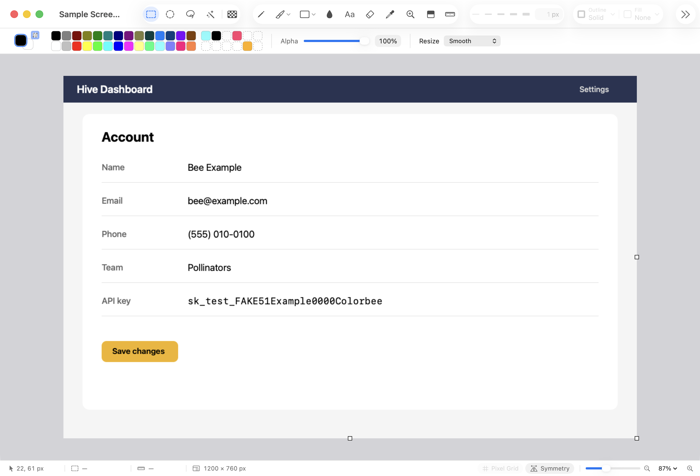
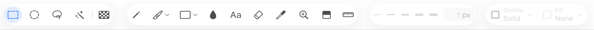
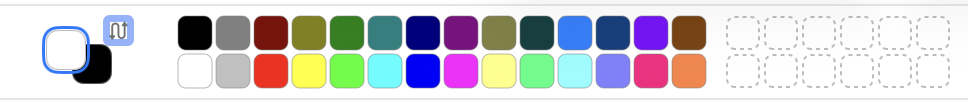

Colorbee works like classic Paint: pick a tool, click and drag. Here's a quick tour of the window.

The Colorbee window.
The toolbar

From left to right:
Selection tools: Rectangle, Ellipse, Free-Form and Magic Wand, and Transparent Selection.
Drawing tools: Pencil, Brushes, Shapes, Fill, Text, Eraser, Eyedropper, Magnifier, Gradient and Measure. Brushes and Shapes each open a gallery to choose from.
Size: five preset sizes and a box for any size.
Outline and Fill: how shapes are drawn.
Hover over any button to see its name and its key. New images start with Rectangle Select, so a first click selects rather than draws.
The palette bar

Color 1 and Color 2. Left-click paints with Color 1, right-click with Color 2. Click a swatch to set the ringed well; right-click a swatch to set Color 2. Double-click a well to choose any color with the Mac's color picker.
Custom colors: the 12 slots after the swatches. A color you pick in the color picker lands in the next empty slot. Control-click a slot to remove it.
Alpha: how see-through the ringed well's color is.
The right end of the bar shows the settings for the tool you're using, such as a tolerance.
You can drag up or down on a number box, such as the size or the Alpha percentage, to change it: down makes it bigger. Hold Shift to go faster. Click it to type a number instead.
One-key tools
When you're not typing text, single keys pick tools and do common things:
Key
Tool or action
Key
Tool or action
P
Pencil
M
Rectangle Select
B
Brush
L
Free-Form Select
E
Eraser
W
Magic Wand
G
Fill
U
Shapes
T
Text
R
Measure
I
Eyedropper
X
Swap Color 1 and Color 2
Z
Magnifier
D
Black and white again
[ and ]
Smaller and larger size
Space (hold)
Move around the image
These are the defaults. You can change any shortcut in Colorbee ▸ Settings ▸ Shortcuts.
Undo
Every change can be undone with ⌘Z, with no limit, and redone with ⇧⌘Z. View ▸ History (⌘Y) lists every step, and clicking one jumps back to it. Drawing a selection on its own isn't a step, so ⌘Z doesn't undo a selection: to take part of one away, Option-click it with the Magic Wand, or hold Option and drag around it with Rectangle Select.
The sidebar and status bar
The sidebar on the right holds the Layers (⌘L), Adjustments, History (⌘Y) and Clipboard History (⌥⌘V) panels. Choose them from the View menu or the buttons at the right of the toolbar.
The status bar along the bottom shows where the pointer is, the size of the selection and the image, and has the Pixel Grid and Symmetry switches and the zoom.
Settings
Colorbee ▸ Settings (⌘,) has three tabs:
General: Light, Dark or System appearance, and the resolution PDFs open at.
Shortcuts: change any keyboard shortcut.
Export Presets: the sizes in File ▸ Export As.
Next
Redact a screenshot: hide email addresses, phone numbers and keys before you share.